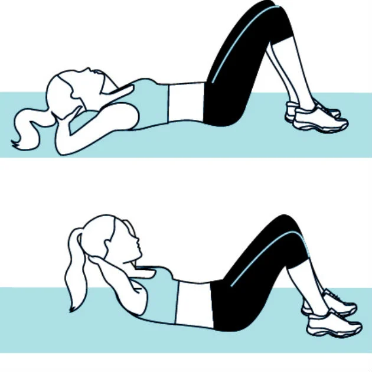

Exercícios para abdômen:
Abdominal supra solo
Deite-se sobre um colchonete, de forma que as costas estejam paralelas ao chão, dobre os joelhos e apoie-os no chão, estendendo os braços e colocando as mãos nas orelhas, incline um pouco o queixo, deixando 3 dedos livres o pescoço. Depois, puxe o ar e contraia o abdômen durante a subida do movimento. Mantenha o movimento por 2 segundos e volte à posição inicial e repita.
Abdominal infra solo
Deite de costas no chão, com os joelhos estendidos e quadril flexionado, com as mãos espalmadas no solo, utilize a força do abdômen para levar os pés na direção da cabeça e os joelhos na direção do peito. Volte à posição inicial.
Abdominal oblíquo com anilha
O abdominal oblíquo rotação russa com anilha e pernas para cima é um exercício avançado para o seu treino de abdômen. Chamado também de rotação de tronco sentado com anilha, giro russo ou torção russa com anilha, este abdominal fortalece os músculos oblíquos através de uma rotação de tronco.